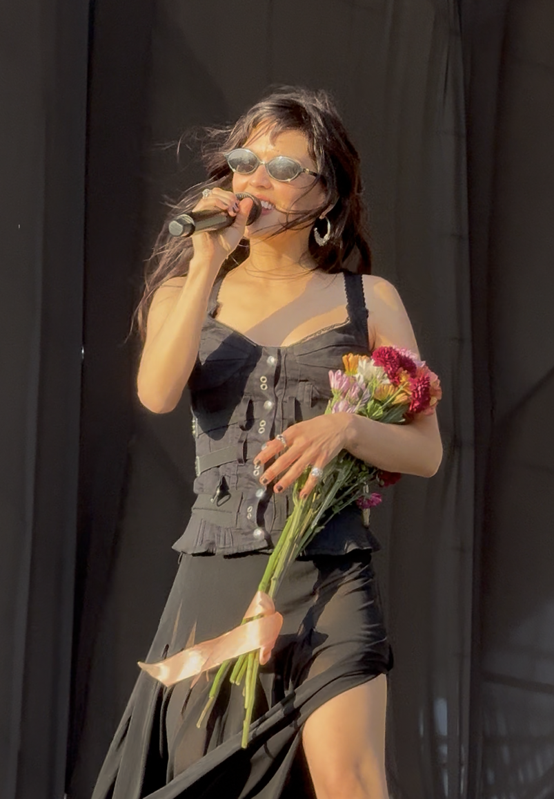
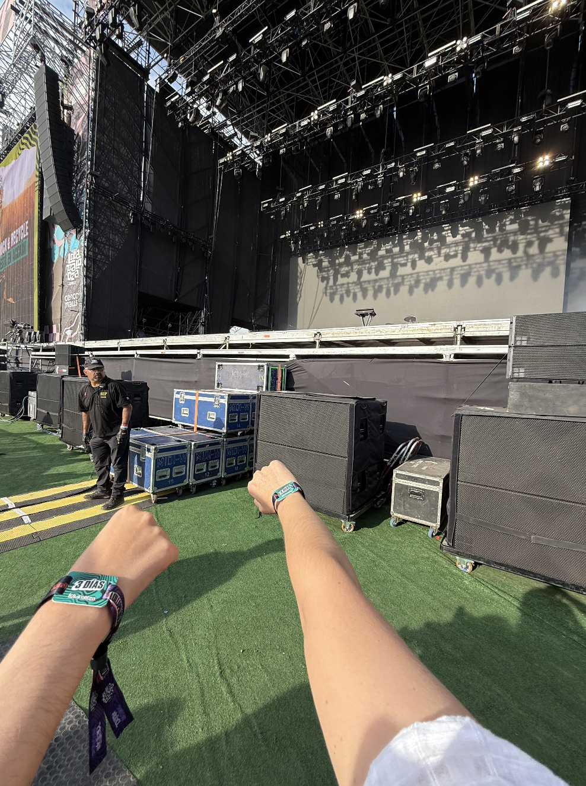
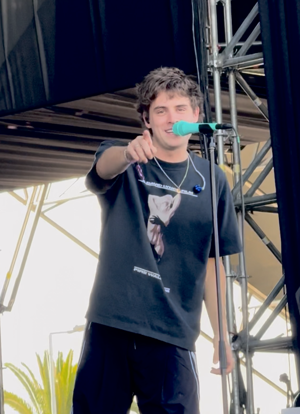
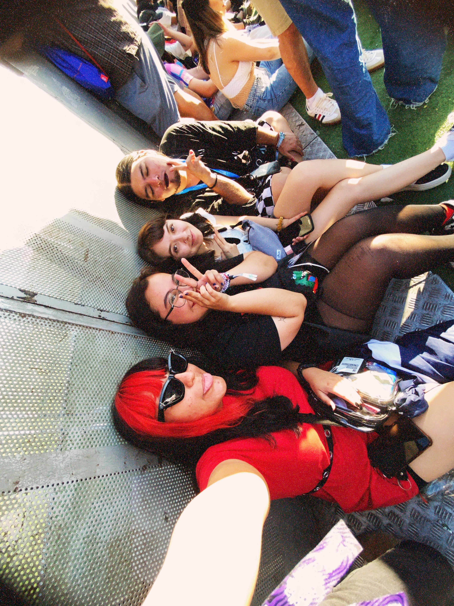
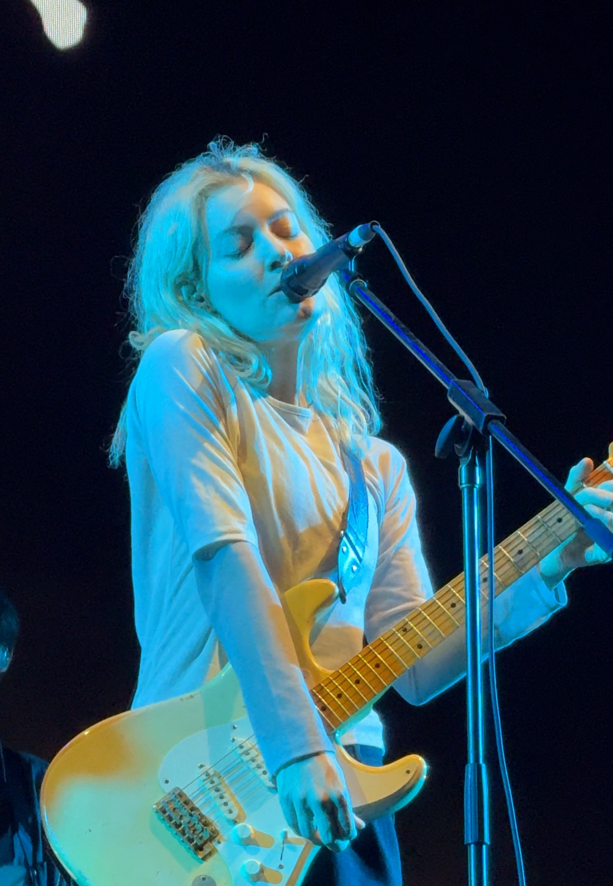
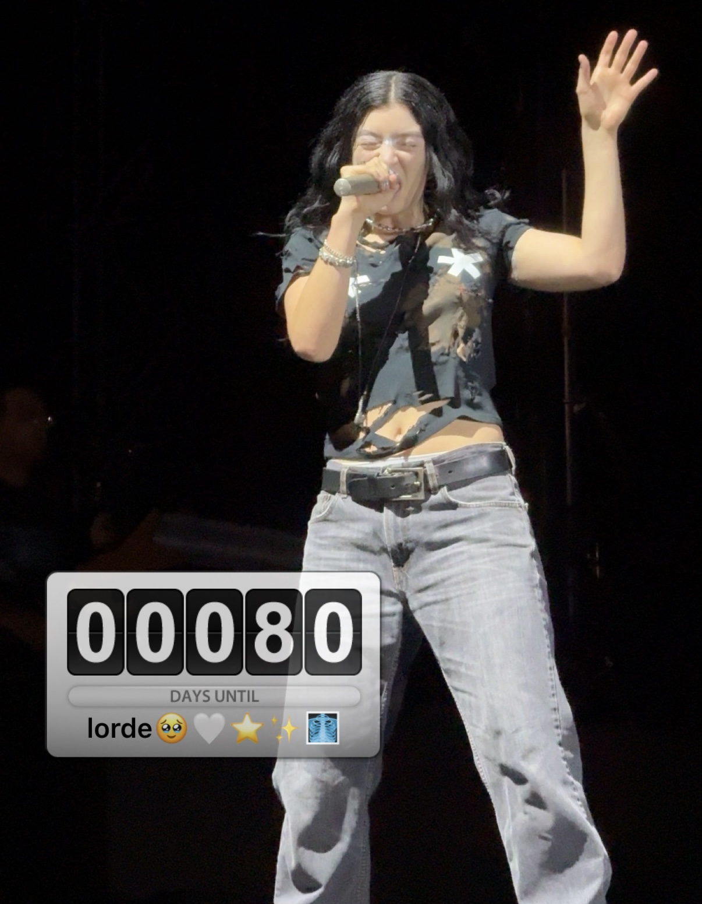
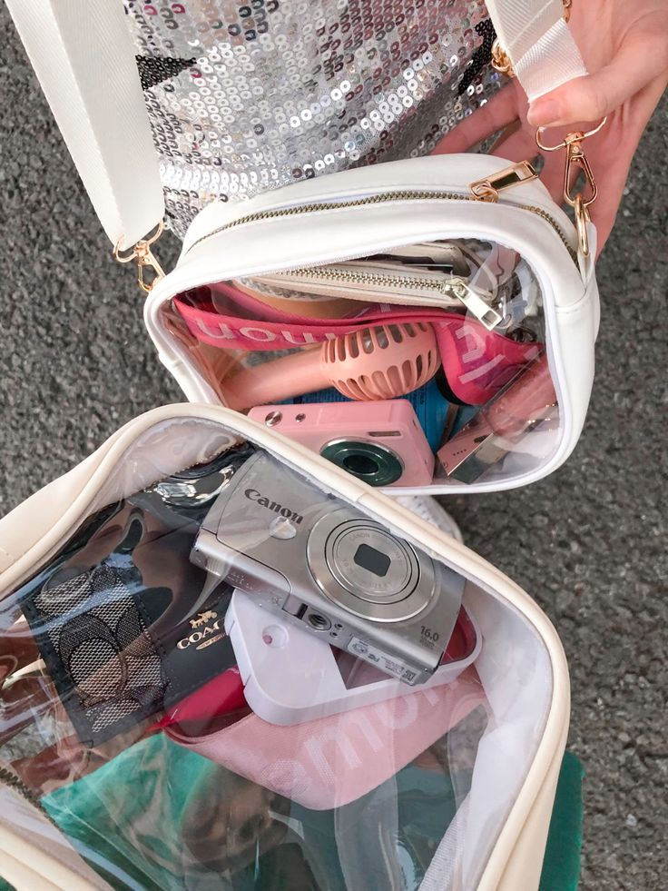
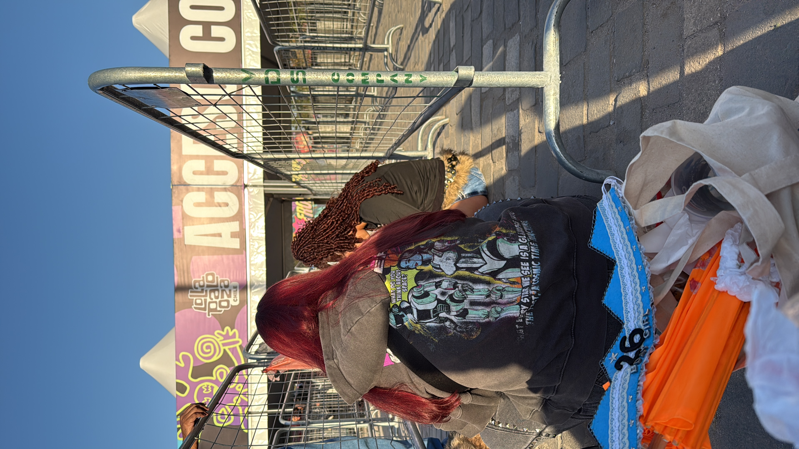

Barricade Guide





Conciertos en los que he estado en reja:
Lorde x2 - The Lumineers x2 - Conan Gray - Girl in red - The Marías - Dua
Lipa - Parcels - Royel Otis - Men I Trust
Disclaimer: estas son sólo recomendaciones y tips que te pueden servir. Lo más importante es tu bienestar y el autocuidado. ¡No te exijas demás, la idea es que tengas una linda experiencia y lo disfrutes!
Días previos
Prepararte la semana previa a un concierto puede ayudar a aguantar de mejor manera las horas de pie, el calor/frío, y cansancio.
- Dormir bien los días anteriores: Llegar con sueño acumulado hace muchísimo más pesada la espera.
- Hidratarte desde antes: No solo el mismo día. Tomar suficiente agua durante la semana ayuda bastante.
- Comer normal y constante: Evita llegar “guardando hambre”. Comer bien los días previos te da más energía.
- Probar el outfit antes: Especialmente zapatos. Nunca estrenes zapatillas para hacer fila todo el día.
Además, es importante recordar hacer lo siguiente:
- Cargar la bateía portátil
- Liberar espacio en el celular
- Planificar el regreso a casa

MUST objetos esenciales

- Ventilador de mano o abanico
- Dulces (yo llevo siempre Skitles)
- Botella de agua
- Gorro
- Lentes
- Bloqueador
- Gatorade / electrolitos
- Batería portátil
- Llaves
- Lentes
- B!p
- Dinero en efectivo
- Tarjetas
- Pañuelos
- Gotitas de ojos si es que usas lentes de contacto
- Tapa de botella*
*te la escondes y así cuando te den agua dentro del recinto puedes cerrarla.
Día del concierto

Llega temprano y lleva comida y snacks para antes del ingreso al recinto. Mientras estés esperando te sugiero comer con normalidad e ir al baño, ya que una vez entrando es muy probable que ya no te puedas mover de tu lugar.
Tips
- Intenta sentarte cada cierto rato mientras esperas, ojalá lo que más puedas
- Muévete y estira piernas
- Toma sorbitos pequeños de agua pero constantes
- Aprovecha el tiempo para conversar conociendo gente o haciendo carteles pequeños que no tapen la vista del resto
Finalizando el concierto
Te recomiendo intentar conseguir: setlist, guitar pick o comprar algún recuerdito, siempre están más baratos a la salida.